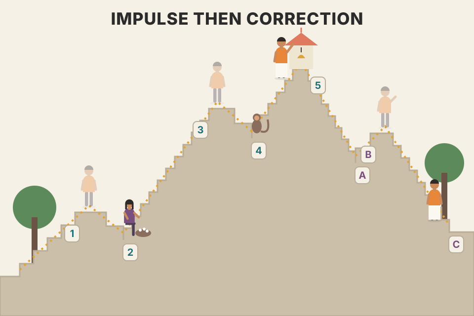
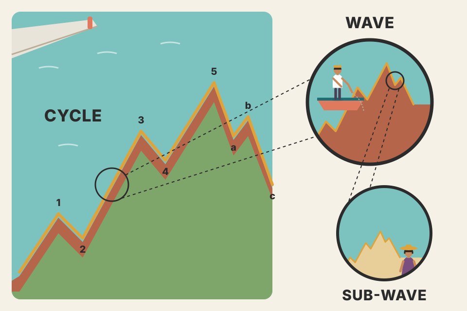
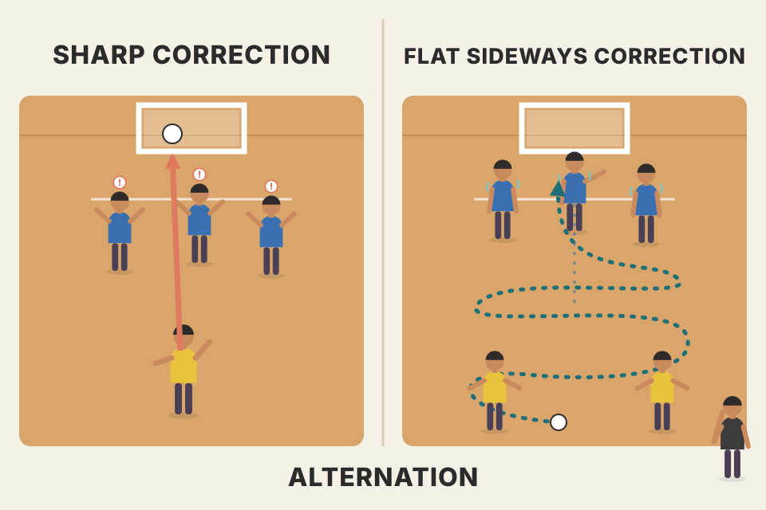
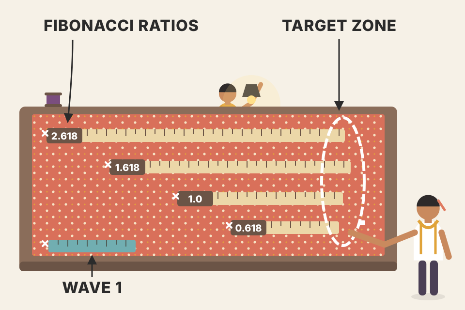

The whole chapter in the book's order: the 5-3 wave cycle and how it repeats inside itself, the three kinds of corrections, alternation, channels, wave 4 as support, and then Fibonacci: the numbers, the ratios, retracements and time targets. Wave diagrams are drawn by a small program from the book's rules; price charts use simulated prices. Anything not in Murphy's chapter is marked, including a testable wave-2 pullback trade with a pooled simulation in section 13.
Murphy ranks three aspects of the theory: pattern first, ratio second, time third. The chapter follows that order.
The founder is Ralph Nelson (R.N.) Elliott. His ideas were first published in 1938 in a monograph, The Wave Principle, published by Charles J. Collins from Elliott's original work. Elliott was strongly influenced by Dow Theory, which has much in common with his. In a 1934 letter to Collins he said he had subscribed to Robert Rhea's stock market service and knew Rhea's book on Dow Theory, and he called the Wave Principle "a much needed complement to the Dow Theory."
Three aspects, in order of importance:
The theory was first applied to the major stock averages, especially the Dow Jones Industrial Average. In its most basic form: the market follows a repeating rhythm of a five-wave advance followed by a three-wave decline, eight waves in one complete cycle (Fig 13.1). Waves 1, 3 and 5 are impulse waves (rising); waves 2 and 4 move against the trend and are corrective waves (they correct 1 and 3). After the five-wave numbered advance, a three-wave correction follows, labelled a, b, c.
Degree: there are many degrees of trend. Elliott named nine, from a Grand Supercycle spanning two hundred years down to a subminuette lasting only a few hours. The key point: the basic eight-wave cycle stays the same at every degree.
Two rules most Elliott books treat as unbreakable (commonly attributed to Frost & Prechter; not stated in Murphy's chapter) are checked in grey: wave 2 never retraces more than 100% of wave 1, and wave 3 is never the shortest impulse wave. The full list of nine degrees (Grand Supercycle, Supercycle, Cycle, Primary, Intermediate, Minor, Minute, Minuette, Subminuette) is also theirs; Murphy names only the first and the last.

Climbing a staircase with two landings: step up (1), pause and slip back a little (2), the big climb (3), another pause (4), the last push (5). Then the walk back down comes in three moves: down (a), a hopeful bounce (b), down again (c).
An impulse wave moves with the bigger trend; a corrective wave fights it. The chapter's "never overlap" rule (wave 4 shouldn't fall into wave 1's territory) is what keeps the five-wave count honest: if wave 4 drops below the top of wave 1, the "impulse" probably wasn't one. Murphy adds that this rule is rigid in stocks but not in commodity futures (section 16). Push wave 4's retracement up until the check turns red.
The chart's default sliders: wave 1 runs 100 → 130 (30 points). Wave 2 gives back 55%, 16.5 points, to 113.5. Wave 3 is 1.65 × 30 = 49.5 points, to 163. Wave 4 gives back 38% of wave 3, 18.8 points, to 144.2, still 14.2 above wave 1's top at 130, so the count holds. The overlap line is 163 − 130 = 33 points below wave 3's top, which is 33 ÷ 49.5 = 67% of wave 3. Drag wave 4 past 67 and the first check turns red.
Why this matters in practice: before wave 4 starts, you already know the exact price (130) that would disprove "this is wave 4 of an impulse". A count gives you a price that proves it wrong, and that price is where a trader puts the stop. Section 13 tests that idea on the wave-2 pullback.
Each wave splits into waves of the next lower degree, which split again. Each wave is also part of a wave of the next higher degree. In Fig 13.2, the two largest waves, 1 and 2, split into 8 smaller waves, which split into 34. Those big waves 1 and 2 are only the first two waves of an even larger five-wave advance (wave 3 of that degree is about to start). Splitting the 34 once more gives 144 (Fig 13.3).
These numbers, 1, 2, 3, 5, 8, 13, 21, 34, 55, 89, 144, aren't random. They belong to the Fibonacci sequence, the mathematical basis of the theory (section 11).
Fives or threes? Whether a wave splits into five or three is decided by the direction of the next larger wave. Waves moving with it split into five; waves moving against it split into three. In Fig 13.2 waves (1), (3), (5) split into five because their parent, wave 1, is rising; (2) and (4) split into three. Inside the correction, (a) and (c) split into five because they move the same way as their parent, wave 2; (b) moves against it and has only three.
Telling threes from fives is hugely important because it tells you what to expect next:

A coastline seen from a plane, then from a boat, then on foot: the same jagged shape at every zoom level. Drag the slider: the cycle keeps its 5-3 outline while each leg grows its own 5-3 or 3 inside.
Only one rule generates every count: "with the parent → 5 parts, against it → 3 parts". A rising wave = 5 parts, of which three rise and two fall; a falling correction = 3 parts, two falling and one rising. Apply it again and again and the counts come out 1 + 1 = 2, then 5 + 3 = 8, then 21 + 13 = 34, then 89 + 55 = 144. Those are Fibonacci numbers because of the rule's arithmetic: each new count adds up the previous ones.
The slider runs this rule. Let M be the number of smallest legs inside a with-trend wave and C the number inside a correction (a zig-zag: five, three, five). One more split turns a with-trend wave into three with-trend parts and two corrections, and a correction into two with-trend parts and one correction:
// legs inside one wave after `depth` splits
function legs(kind, depth) {
if (depth === 0) return 1;
const M = legs('motive', depth - 1), C = legs('corrective', depth - 1);
return kind === 'motive' ? 3 * M + 2 * C // 1, 3, 5 with; 2, 4 against
: 2 * M + 1 * C; // a, c with; b against
}
// cycle = legs('motive', d) + legs('corrective', d)
// d = 0..3 → (1+1) 2, (5+3) 8, (21+13) 34, (89+55) 144
The step from (M, C) to (3M + 2C, 2M + C) is the Fibonacci step "add the last two" done three times in a row. Start from (1, 1) and you get (1, 1) → (5, 3) → (21, 13) → (89, 55): every split jumps three places along the sequence. So 2, 8, 34, 144 are Fibonacci numbers by construction. That shows the counts follow from the 5-3 rule; it doesn't show that markets follow the 5-3 rule.
Elliott's five advancing waves line up with Dow's three advancing phases of a bull market: three up waves (1, 3, 5) separated by two corrections (2, 4) fit Dow Theory nicely. Elliott was clearly influenced by Dow, but he also believed he had gone well beyond Dow and improved on him. Both men took their images from the sea: Dow compared the major, intermediate and minor trends to tides, waves and ripples; Elliott wrote of the market ebbing and flowing, and named his theory after waves.
Both men describe the same thing: a long move made of pushes and pauses. Elliott adds labels to the pauses (waves 2 and 4) and a fixed number of pushes (three), which turns Dow's description into something you can count. In Dow's terms (Chapter 2), phase 1 is the informed buying near the bottom, phase 2 the trend-following public, phase 3 the late, excited buying. In Elliott's terms the strongest push is usually the middle one (wave 3 extends in stocks, section 16), which fits Dow's broad public participation in phase 2 (my reading of the two together).
Corrective waves are generally less clearly defined than impulse waves, so they're harder to identify and predict. One thing is clear: corrections never come in five waves. They are threes, never fives, with the exception of triangles. Murphy looks at three kinds: zig-zags, flats and triangles.
A zig-zag is a three-wave correction against the major trend that breaks down 5-3-5. Figs 13.4–13.5 show one in a bull market (pointing down); Figs 13.6–13.7 show a bear-market rally (pointing up). The middle wave B falls short of the start of wave A, and wave C moves well beyond the end of wave A.
A less common variation, the double zig-zag (Fig 13.8), sometimes appears in larger corrections: two separate 5-3-5 zig-zags joined by an intervening a-b-c.
A zig-zag is a sharp, decisive pullback: a real drop (A), a half-hearted bounce that doesn't get back to where the drop started (B), then a second real drop that goes further (C). The "5" inside A and C means each drop is itself a little trend.
The 5-3-5 shape says the correction is driven: A and C are fives, so they are small trends of their own in the correction's direction, and only B is a reluctant counter-move. That is why C usually goes past A's end: the second leg is a fresh trend, not a test of the low. Read it as a checklist: if a pullback's first leg is a clean five, expect a B bounce that fails below A's start, then another leg down.
A falls 100 → 80 (20 points). B bounces half of that, to 90, short of 100. Rule 5 in section 12 (c ≈ a) gives C = 20 points from 90, ending at 70, which is 10 below A's end. Rule 6 (a × .618 below the bottom of a) gives 80 − 12.4 = 67.6. So the two rules mark a zone of about 67.6–70 for the end of C. A trader long from below 100 who reads the drop as a zig-zag would expect a buying area there, and a fall far below it (say C reaching 1.618 × A, to 57.6) would say the count needs another look.
The flat follows a 3-3-5 pattern: wave A is a three, not a five (Figs 13.10 and 13.12). A flat is more a consolidation than a correction and is considered a sign of strength in a bull market. In a normal flat in a bull market (Figs 13.9–13.12), wave B rallies all the way back to the top of wave A, showing more strength, and the final wave C ends at or just below the bottom of wave A, unlike a zig-zag, whose C goes well below it.
Two "irregular" variations:
Where B and C end tells you how strong the underlying trend is. A zig-zag's B can't recover the start of A: sellers are in charge. A flat's B gets all the way back: buyers are still strong, so the "correction" is mostly sideways. In the inverted irregular, sellers can't even get C back to A's low. Compare the horizontal guide lines (A's start and A's end) across the four choices.
All four drawings use the same wave A, 100 → 80 (20 points). Rule 7 (section 12) says that when B reaches or passes A's top, C is about 1.618 × 20 = 32.4 points.
So rule 7's 1.618 lines up with the irregular flat, while the normal flat's C is closer to C = A. Murphy states both without reconciling them; in practice treat the pattern's description (where C ends relative to A) and the ratio as two separate estimates and look at where they overlap (my reading).
Triangles usually appear in the fourth wave, before the final move in the direction of the major trend (they can also appear in the b wave of an a-b-c correction). So, in an uptrend, a triangle is both bullish and bearish: bullish because the uptrend should resume, bearish because after one more wave up, prices will probably peak.
In the symmetrical triangle each leg here is 0.618 of the one before (that ratio is Murphy's rule 8 in section 12). The other shapes' slopes, and measuring the thrust from the breakout point, are my choices for the picture.
Each swing inside a contracting triangle is smaller than the last: buyers and sellers are agreeing on a price more and more closely while the bigger trend pauses. When one side finally wins, price leaves the pattern fast, and the "height" rule assumes the breakout travels about as far as the widest swing that was squeezed out. The Elliott twist is the label: because the triangle is wave 4, the move out of it is wave 5, the last push. So the same target is a place to aim for and a place to expect the top.
Wave 3 tops at 100. The triangle's legs are 30, 18.5, 11.5, 7.1 and 4.4 points, each about .618 of the one before (rule 8). The widest part is the first leg, 30 points. In the drawing price breaks the upper line at about 82.9 after wave e, so the thrust target is 82.9 + 30 ≈ 112.9 (the readout shows the same). In practice (my reading, not Murphy's): a long entry on the break, a stop under the low of wave e (if price falls back through the whole triangle the "wave 4" label was wrong), and the 113 area as both target and the place to stop expecting more, because wave 5 is the last wave.
In general: the market usually doesn't act the same way two times in a row. If a certain kind of top or bottom happened last time, it probably won't happen this time. Alternation doesn't tell you what will happen; it tells you what probably won't. More specifically, it's used to predict the type of correction: corrective patterns tend to alternate. If wave 2 was a simple a-b-c, wave 4 will probably be complex, such as a triangle. If wave 2 was complex, wave 4 will probably be simple.

A football team that got burned by the same trick last match won't fall for it again, and the crowd of traders is the same. A sharp, simple pullback teaches people to "buy the dip fast"; next time the dip is slow and tangled and wears them out instead.
Murphy gives the rule without a cause. A common explanation (not in the book): a correction ends when the crowd that was wrong has given up. A sharp, simple wave 2 shakes people out quickly, so the next correction has to work on a different group (late buyers who learned to buy dips fast), and wearing them down takes time and sideways chop. Whatever the cause, the useful part is practical: if wave 2 was a quick a-b-c, don't expect wave 4 to end quickly; a sideways, drawn-out wave 4 (a triangle or flat) is the default, so a breakout from the first small range in wave 4 is more likely to fail.
Elliott used price channels (Murphy covered trend channels in Chapter 4) to set price objectives and to help confirm that a wave count is complete. Step by step in an uptrend:
The book says where the redrawn lines start (top of 1, bottom of 2) but not their slope. Here the redrawn upper line runs from the top of wave 1 through the top of wave 3, and the lower line is its parallel from the bottom of wave 2.
A channel turns the count into a geometric prediction: if waves 2 and 4 are true corrections, they should line up, and the parallel line projects roughly where wave 5 should end. If price runs far outside the channel, either the trend is accelerating (redraw) or the count is wrong. Raise wave 3 to 2.5× and see the final channel's upper line jump; then tick the extended-wave box.
Once five up waves are complete and a bear trend begins, that bear market will usually not fall below the previous fourth wave of one lesser degree, that is, the last fourth wave formed during the previous bull advance. There are exceptions, but usually the bottom of that fourth wave contains the bear market. This helps set a maximum downside price objective.
Wave 4 was the last place, during the climb, where buyers stepped in after a real pullback. When prices come back down to it, those buyers (and everyone who missed it) are waiting there again: a floor built from memory.
The advance runs from 100 to 175.7. Wave 4 bottomed at 145.7. Murphy's guideline says the bear market should usually hold above 145.7, so the maximum downside objective is 175.7 − 145.7 = 30 points, which is 40% of the 75.7-point advance. With the slider at 35%, the bear falls 26.5 points to 149.2 and holds. Move it to 40% or more (the exact limit is 39.6%) and the readout turns red: one of the exceptions.
In practice: the wave-4 low gives a long-term buyer a level to wait for, and a level that says "something bigger is happening" if it breaks. Note that this works best with the wave count right; if the "wave 4" you picked was really a smaller wave, the level is wrong too.
In Nature's Law, Elliott said the mathematical basis of his Wave Principle is a number sequence found by Leonardo Fibonacci in the thirteenth century, now called the Fibonacci numbers: 1, 1, 2, 3, 5, 8, 13, 21, 34, 55, 89, 144, and so on forever. Among its interesting properties, not the least is an almost constant relationship between the numbers:
Move the two seed sliders away from 1 and 1: the sequence changes (e.g. 2, 7, 9, 16, 25…) but the ratios still converge to .618 and 1.618. The limit comes from the "add the last two" rule, not from the particular numbers. Grimes makes this point in his Fibonacci chapter (The Art and Science of Trading: Course Workbook, 2017, ch.13, pdf p474), using seeds such as {2, 5, 7, 12, …}. He also argues the 50% level is not a Fibonacci ratio at all, while Murphy (section 13) counts it as one because 1/2 is the second ratio in the sequence: the two authors define "Fibonacci ratio" differently.
Wave theory has three aspects: wave form, ratio and time. Wave form is the most important and has been covered. Fibonacci ratios and retracements apply to both price and time; price is considered more reliable. First, the wave form itself always breaks down into Fibonacci numbers (Figs 13.1 and 13.3): one cycle is 8 waves (5 up, 3 down), and two more subdivisions give 34 and 144. But the Fibonacci basis goes beyond counting waves, to proportions between waves. Among the most commonly used ratios:

The ratios are a set of rulers. Measure wave 1, then lay the 1.618 ruler from the bottom of wave 2 to see where wave 3 should at least reach. Each rule is a different ruler laid from a different starting point; where several land close together, the target is stronger.
All these rules assume the waves are proportional to each other, so one measured wave predicts the others. 1.618 and .618 are the "same" ratio seen from opposite sides (one is 1 ÷ the other); 3.236 is just two 1.618s; 2.618 is 1.618 + 1. That's why so few numbers cover so many rules. The rules give targets, not guarantees: in the chart the actual wave ends (where you set the sliders) next to the targets.
The ratios above give targets for impulse and corrective waves. Another way to set price objectives is percentage retracements. The most used numbers are 61.8% (usually rounded to 62%), 38% and 50%. Chapter 4 showed that markets usually retrace previous moves by predictable percentages, best known 33%, 50% and 67%; the Fibonacci sequence refines them a little. In a strong trend, a minimum retracement is usually around 38%. In a weaker trend, the maximum retracement is usually 62%.
The book's two monthly Treasury Bond charts: Fig 13.25 measures from the 1981 bottom to the 1993 peak, and the 1994 correction stopped right at the 38% line. Fig 13.26 measures from the 1994 bottom to the early-1996 top, and prices corrected to the 62% line.
Remember the first three ratios: 1/1 (100%), 1/2 (50%), 2/3 (66%). Many students of Elliott don't realise that the famous 50% retracement is a Fibonacci ratio, and so is the two-thirds retracement. A complete (100%) retracement of a previous bull or bear market should also mark important support or resistance.
Grimes measured about 83,000 pullbacks of 100% or less across equities, futures, forex and random-walk data. His histograms show no peak at 38.2% or 61.8% (80% looked about as important as 50%), real markets looked like the random walks, and pullbacks ended over a broad plateau of roughly 40% to 75% of the prior leg (The Art and Science of Trading: Course Workbook, 2017, ch.13, pdf p482–485; conclusion pdf p491). The chart below shows why the levels can still look right: it measures every pullback in a random simulated walk (no Fibonacci structure at all) and counts how many end within ±3 points of 38.2, 50 or 61.8%. As a control it also counts three non-Fibonacci levels of the same width, fixed in advance: 44, 56 and 68%. If both groups catch about the same share, a pullback "stopping at a Fibonacci level" is just what chance produces. The second line pools 40 random walks so one lucky or unlucky run can't decide it.
Murphy gives levels, not a trade. The most common way traders turn this section into one is to buy wave 2's pullback: after a clear wave 1, put a limit buy at a retracement level, a stop at the start of wave 1, and a target from rule 2 (wave 3 ≥ 1.618 × wave 1). The rules below are mine, written so a program can follow them. Step through one simulated trade, then look at the pooled line.
// c = closes; piv = zigzag(c, 0.03) as in Chapter 4
function wave2Trades(c, piv, depth) {
const out = []; let busy = -1; // one trade at a time
for (let k = 1; k < piv.length; k++) {
const T = piv[k - 1], P = piv[k]; // trough → peak = wave 1
if (P.type !== 'peak' || P.seenAt <= busy) continue;
const w1 = P.v - T.v; if (w1 < 0.10 * T.v) continue;
const entry = P.v - depth * w1, stop = T.v, target = entry + 1.618 * w1;
let fill = -1;
for (let j = P.seenAt; j < c.length; j++) {
if (c[j] > P.v) break; // new high: cancel
if (c[j] <= entry) { fill = j; break; }
}
if (fill < 0) continue;
const fp = Math.min(entry, c[fill]); let x = c.length - 1;
for (let j = fill + 1; j < c.length; j++)
if (c[j] <= stop || c[j] >= target) { x = j; break; }
out.push({ fill, exit: x, R: (c[x] - fp) / (fp - stop) }); // result in R
busy = x;
}
return out;
}
Reading the result. Risk is (1 − depth) × wave 1 and reward is 1.618 × wave 1, so a 50% entry has a reward:risk of 3.24 and breaks even if it wins 1 ÷ (1 + 3.24) = 23.6% of the time. A deeper entry has a better reward:risk and a lower break-even rate, but fills less often and wins less often. On a random walk with no drift, every depth, Fibonacci or control, wins at almost exactly its break-even rate, so the average result is about 0 R: a good reward:risk is not an edge. With an upward drift every depth makes money, and the control depths do as well as the Fibonacci ones: the profit comes from the trend, not the level. With a downward drift every depth loses, and nothing in the setup tells you which kind of market you are in. Simulated data only; it says nothing about how real markets behave.
Failure modes: the pullback may never reach the entry, so the setup is missed (the step-through lists filled trades only, so you won't see these there); in the step-through, look for price falling through the stop because the "wave 1" was really a b-wave or part of a bigger decline; the trade fills, rises, but stops short of the target (a short wave 3) and later comes back to the stop.
vwap_volume_profile_explained.md: the Currency Pros checklist enters with limit orders at the 67% or 75% retracement of the range. 67% is Murphy's two-thirds (2/3, a Fibonacci ratio); 75% isn't a Fibonacci level. Its 15-minute version is a paper-trade lead only (backtest_results_summary.md).Fibonacci time relationships exist; they're just harder to predict, and some Elliotticians rank time as the least important of the three aspects. To find time targets, count forward from significant tops and bottoms. On a daily chart, count trading days from an important turning point and expect future tops or bottoms on Fibonacci days: the 13th, 21st, 34th, 55th or 89th trading day. The same works on weekly, monthly or even yearly charts.
The book's examples: Fig 13.27 counts months from the 1981 bottom in Treasury Bonds (the caption: it may be coincidence, but the last four targets coincided with important turns). Fig 13.28 counts months from the 1982 bottom in the Dow; the last three targets fell in the bear-market years 1987, 1990 and 1994. The same caption adds that the 1987 peak came 13 years after the 1982 bottom, a Fibonacci number. That is how it's printed, but 1982 to 1987 is 5 years (also a Fibonacci number), so the "13" looks like a slip in the book (my note).
Murphy's caution (pdf p387; in the book this paragraph comes just after the "combining" example in section 15, but it's about time targets): stock and futures charts show many Fibonacci time relationships, but there are too many possible ones. Targets can be counted top to top, top to bottom, bottom to bottom and bottom to top. These relationships can always be found after the fact; it's not always clear which one matters for the current trend.
The prices are random. A turn is any swing high or low found by a 5-bar pivot rule (mine). The readout counts how many time lines land within ±2 bars of a turn, for Fibonacci counts and, with the box ticked, for nearby non-Fibonacci counts. If both hit about as often, the hits are what you'd expect by chance, which is Murphy's "found after the fact" warning in numbers. One run of five lines proves nothing either way, so the second line pools 300 simulated markets: Fibonacci counts, nearby non-Fibonacci counts and the plain share of bars near a turn come out at about the same rate (roughly half, because a 5-bar pivot rule finds a turn every few bars). Simulated data, not evidence about real markets.
The ideal situation is when wave form, ratio analysis and time targets line up. Murphy's example: a wave study shows a fifth wave is complete; wave 5 has travelled 1.618 times the distance from the bottom of wave 1 to the top of wave 3; the time from the start of the trend is 13 weeks from a previous low and 34 weeks from a previous top; and the fifth wave has lasted 21 days. The odds would be pretty good that an important top is near.
Each aspect alone is weak (sections 12–14 showed how easily one level or one count "works"). Requiring three independent kinds of evidence at once is a filter, the same idea as the candle-pattern filter in Chapter 12.
Wave 1 started at 100 and wave 3 topped at 160, so bottom-of-1 to top-of-3 is 60 points. Wave 4 bottomed at 140. Rule 4 (section 12): 140 + 1.618 × 60 = 237.1. Now go through the checklist on the day price reaches about 237:
If all three say yes, Murphy says the odds of an important top are good. If only the ratio says yes, you have one line on a chart, which section 13 showed means little on its own.
From the simulations on this page (random prices, so chance only): a pullback ends within ±3 points of a Fibonacci level about a quarter of the time (section 13), and a Fibonacci day count lands within ±2 bars of a turn about half the time (section 14). If the checks were independent, both landing together by chance would happen roughly a quarter × a half ≈ one time in eight. So requiring agreement makes chance signals rarer; it doesn't make any single signal more right, and on those random prices every one of the one-in-eight is still pure chance (the time check alone did no better than its base rate). The catch is Murphy's own warning: if you are free to pick which top or bottom to count from, and which ratio to apply, you can usually make several checks agree after the fact. Decide the starting points and ratios before price gets there, and the filter means something.
| Point | Stocks | Commodities |
|---|---|---|
| Which impulse wave tends to extend | wave 3 | wave 5 |
| "Wave 4 never overlaps wave 1" | unbreakable | not as rigid: intraday penetrations can occur on futures charts |
| Which chart to read | the stock market averages | cash-market charts sometimes give a clearer pattern than futures; continuation charts distort long-term patterns |
| Bull market highs | not singled out (the contrast is drawn for commodities) | can be "contained": a full five-wave bull can fall short of the previous bull high (many 1980–81 tops failed to beat tops from seven and eight years earlier) |
| Best patterns | the averages (what the theory was built for); less well on individual stocks | breakouts from long-term extended bases |
Murphy calls the "contained" bull market possibly the most significant difference. He also stresses that wave theory was meant for the stock market averages. It doesn't work as well on individual stocks, and possibly not on thinly traded futures, because mass psychology is one of its foundations. Gold, with its wide following, is an excellent market for wave analysis.
Murphy's reason for the "averages, not single stocks" rule is mass psychology: the wave shapes are a crowd's mood swinging between hope and fear, so they show up best where the crowd is largest. A single stock, or a thin futures market, can be moved by one piece of news or one large trader, and its swings stop looking like a crowd's. A practical result: on a commodity the extended wave is more often wave 5, so a strong wave 3 is less of a sign that the biggest move is done, and the old bull-market high is not a safe target, since a "contained" bull can stop short of it.
Commodity version: the previous bull high is 205. The new bull starts at 100, wave 1 is 28 points (to 128), wave 3 just equals wave 1, and wave 5 is the extended one at 1.75 × 28 = 49 points. Wave 4 gives back 52% of wave 3 and dips about 0.6 into wave 1's range (to 127.4, below wave 1's top at 128), which the futures version tolerates. The whole five-wave bull peaks at about 176.4, nearly 29 below the old high: a contained bull market. A trader who set the old 205 high as a target would never have been filled.
Perspective: the Elliott Wave Principle builds on classical methods such as Dow Theory and chart patterns; most of those patterns can be explained as parts of the wave structure. It builds on the idea of "swing objectives" with Fibonacci projections and percentage retracements, and goes beyond them by giving them more order and predictability.
Use it with other tools. Sometimes the Elliott picture is clear, sometimes not. Forcing unclear market action into an Elliott count while ignoring other technical tools is a misuse of the theory. Treat it as a partial answer to the forecasting puzzle; combined with the other methods in the book it becomes more valuable.
Reference material: two of the best sources are The Major Works of R.N. Elliott (Prechter, Jr.) and Elliott Wave Principle (Frost and Prechter); all diagrams in Figs 13.1–13.24 come from the latter, courtesy of New Classics Library. A primer, Understanding Fibonacci Numbers by Edward D. Dobson, is available from Traders Press.
Risk is 0.5 × wave 1 and reward 1.618 × wave 1, a reward:risk of 3.24, so break-even is 1 ÷ 4.24 = 23.6%. Winning at the break-even rate means no edge: the reward:risk only sets how often you must win, not whether you will. The control depths (44, 56, 68%) behave the same, and with a drift every depth wins or loses together, so the result comes from the trend, not the level (section 13, beyond the book; simulated data).
8 (5 up + 3 down), then 34, then 144, all Fibonacci numbers (section 03).
More downside: a correction can never be five waves, so the five-wave drop is probably only wave (a) of an a-b-c (section 03).
Zig-zag (5-3-5): B falls short of A's start; C goes well beyond A's end. Normal flat (3-3-5): B returns to A's start; C ends at or just past A's end (sections 05–06).
The triangle: five waves, each a three. It usually forms wave 4, sometimes wave b (sections 05, 07).
Both: the uptrend should resume, but after one more wave up prices will probably peak. The thrust is about the triangle's height; Prechter says the apex often times the end of wave 5 (section 07).
A complex correction, such as a triangle. It only tells you what probably won't happen again (section 08).
Under the bottoms of waves 2 and 4, with a parallel over the top of wave 3 (over wave 1 if wave 3 is extended). Wave 5 should approach the upper line (section 09).
120 + 1.618 × 50 = 200.9 (rule 2, section 12).
38%, 50% (1/2), 62% and the two-thirds (2/3) level. In a weaker trend the maximum retracement is usually 62% (section 13).
There are many possible counts (top-top, top-bottom, bottom-bottom, bottom-top), they can always be found after the fact, and it's not clear which matters now (section 14).
Commodity bull markets can be "contained": a full five-wave bull may not exceed the previous bull high (section 16).
Wave 1 rises with its parent, so it is 5 parts: (1), (3), (5) are fives and (2), (4) are threes, 5 + 3 + 5 + 3 + 5 = 21. Wave 2 is a correction (a)-(b)-(c): 5 + 3 + 5 = 13. 21 + 13 = 34 (section 03).
50 × 3.236 = 161.8. Added to the top of wave 1: 150 + 161.8 = 311.8 (maximum). Added to the bottom of wave 1: 100 + 161.8 = 261.8 (minimum) (section 12).
With 38, 50, 62 and 100% all on the chart, some line is usually near wherever a pullback ends. In the page's random-walk simulation (no Fibonacci structure), pullbacks end near 38.2/50/61.8 about as often as near the control levels 44/56/68, and Grimes found no clustering at Fibonacci levels in real data (section 13, beyond the book). Murphy's own warning about time targets, that they can always be found after the fact, applies here too.